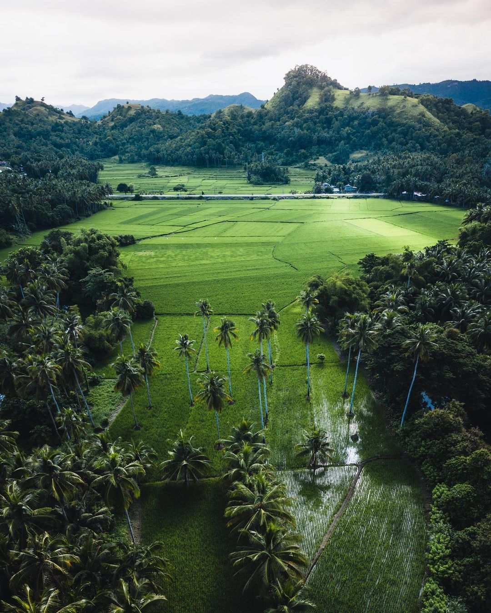
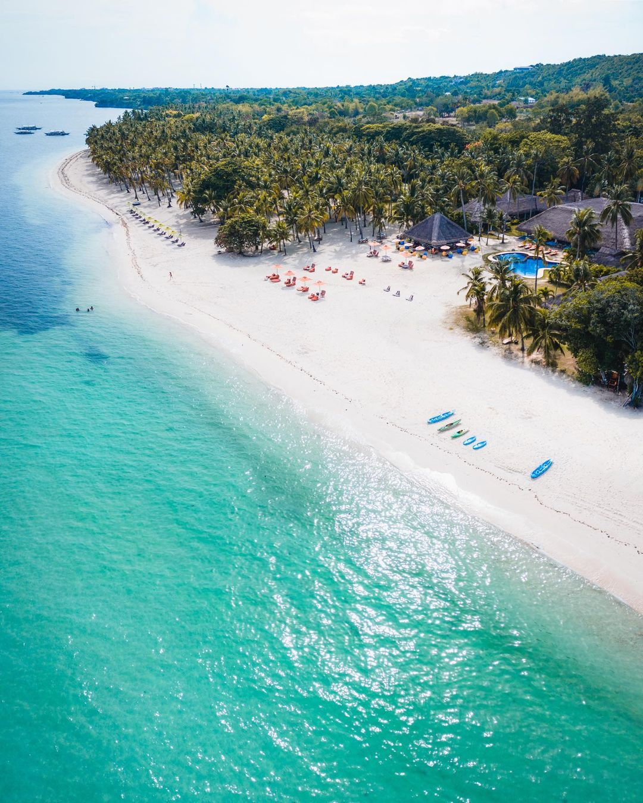
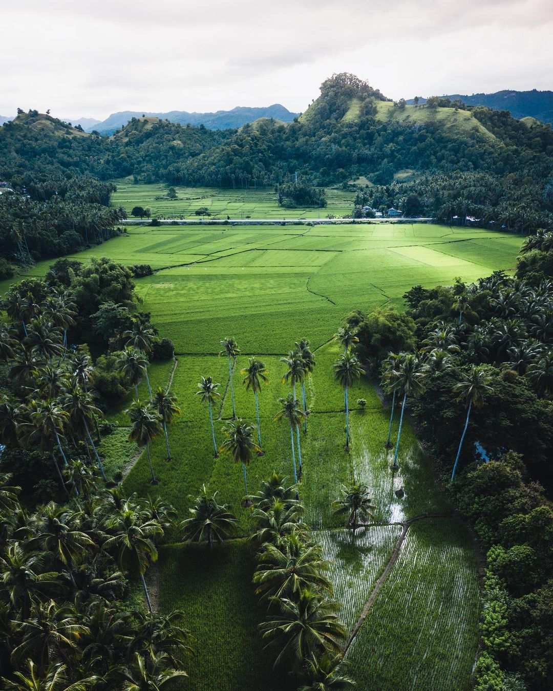
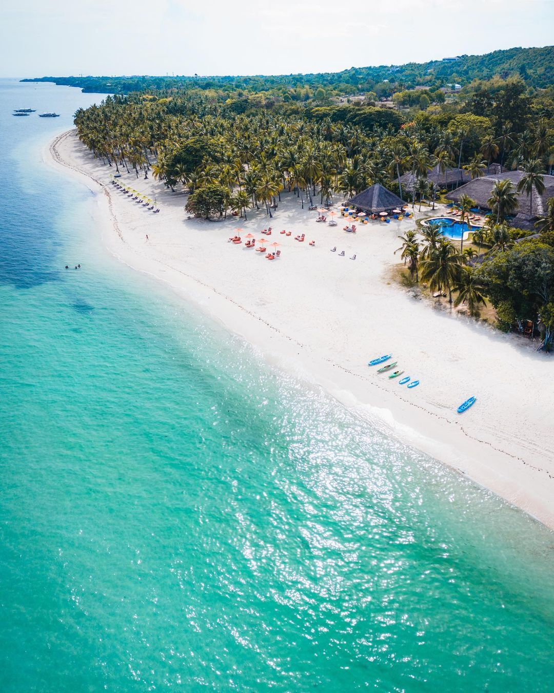

Known as the "Queen City of the South" which reigns in a group of islands comprising the Visayas region of the central Philippines. Ferdinand Magellan died here planting the cross almost 500 years ago bringing Spanish influence and establishing Asia's first European settlement. Cebu was also once a bustling commercial hub between Mexico and China. Today, there is a widespread youthful optimism throughout this thriving energetic metropolis.
The home of the famous Chocolate Hills, Bohol is one of the most visited destinations in the Central Visayas region of the Philippines.
The island province offers breathtaking spots for history buffs, beach lovers, and adrenaline junkies.
Bohol is comprised of one major island and 73 smaller ones surrounding it, so you'll have plenty of places to explore during your trip here.
 



One of the many islands in the Visayas region that is blesses with clean white beaches, crystal clear seas and an animated marine life. Siquijor is situated southeast from Cebu and Negros and southwest from Bohol. Many have been lured by the island’s lethargic pace, the laid back atmosphere and most especially the rich and colorful underwater world – a haven for diving enthusiasts.